Zhibo Pang 庞智博
School of Advanced Manufacturing and Robotics, Peking University, Tenured Professor, PhD Supervisor, Head of the Industrial Physics Intelligence Laboratory.北京大学先进制造与机器人学院机器人科学与工程系，长聘教授，博士生导师，工业物理智能实验室负责人。
庞智博_北京大学先进制造与机器人学院
Zhibo Pang - Google 学术
🔬 Research Directions研究方向
His current research interests include multimodal physical intelligence models (RSI/VLM/VLA/WAM, etc.), efficient physical AI, safe physical AI, robotic systems, dexterous hands, AI for PDEs, physics-informed neural networks (PINNs), high-computing-power controllers, and integrated cloud-computing and control, among others.他目前的研究兴趣包括，多模态物理智能模型（RSI/VLM/VLA/WAM等）、高效物理AI、安全物理AI、机器人系统、灵巧手、AI4PDE、物理信息神经网路（PINNs）、高算力控制器、网算控一体化等。
🚀 Work & Internship Opportunities工作实习机会
The laboratory has long-term recruitment for postdoctoral researchers, engineers, master's and doctoral interns, and undergraduate students. At the same time, according to Peking University's enrollment plan, there are several enrollment slots for master's and doctoral students. In addition, the laboratory also collaborates with many domestic and international universities, providing several opportunities for jointly trained master's and doctoral students.实验室长期招收博士后、工程师、硕博实习生和本科生。同时根据北京大学招生计划，有若干硕士生和博士生招生指标。除此之外，实验室还与多所国内外高校合作，有若干联合培养硕士生和博士生机会。
The laboratory has numerous real projects focused on scenarios such as AI infrastructure, industrial robotics, autonomous laboratories, advanced manufacturing, healthcare, urban management, and energy and power. It is well-equipped, has a harmonious team atmosphere, and provides good training conditions for beginners. PhD, master's, and undergraduate students are welcome to join, to explore and grow together.实验室有较多面向AI基建、工业机器人、自主实验室、高端制造、医疗康养、城市管理和能源电力等场景的真实项目，设备资源充足，团队氛围融洽，新手培养条件较好，欢迎博士生、硕士生、本科生加入，共同探索，共同成长。
Please send your CV, transcripts, and a short description of your research interests to gpkupilab@pku.edu.cn请将个人简历、成绩单与简短的研究兴趣说明发送至 gpkupilab@pku.edu.cn。
📰 News动态
- Oct 2026 New Opportunity for Peking University Graduation Projects｜Enter the field of humanoid robots and delve into cutting-edge embodied intelligence models. Read more →北大毕设新机会｜入局人形机器人，深耕具身智能前沿模型。 查看详情 →
- Oct 2026 Peking University professor Pang Zhibo appeared in an interview on CGTN. Read more →北大教授庞智博登上 CGTN 专访。 查看详情 →
- Sep 2026 Peking University 2027 MEM Online Admissions Briefing Opens. Read more →北大 2027MEM 线上招生说明会开启。 查看详情 →
- Oct 2025 Prof. Zhibo Pang joins Peking University as a Tenured Professor and founds the PKU Physical Intelligence Lab. Read more →庞智博教授加入北京大学任长聘教授，创立北京大学工业物理智能实验室。 查看详情 →
👥 People团队
Academic Leader学术带头人
Visiting Scholar访问学者
Project Management项目管理
Postdoctoral Researcher博士后
Ph.D. Students博士生
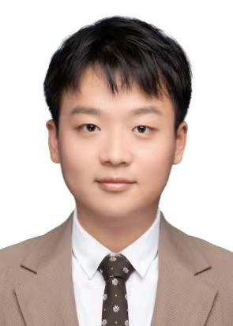
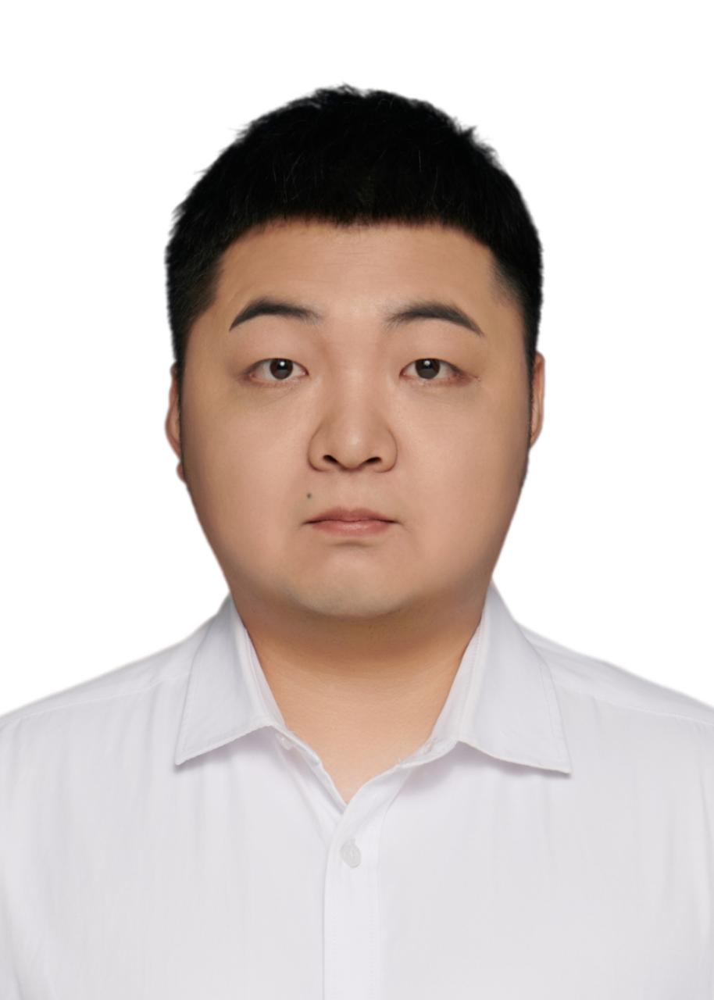
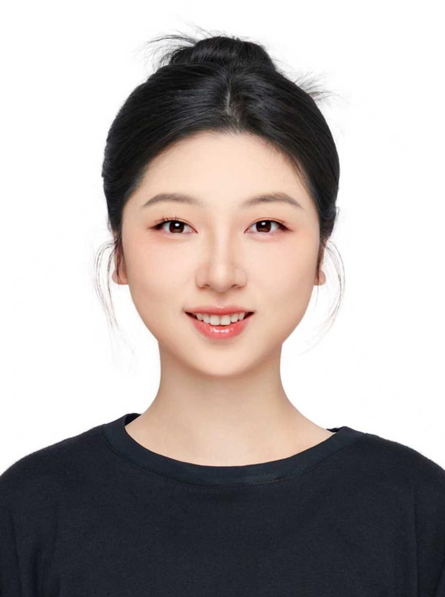
Master's Students硕士生
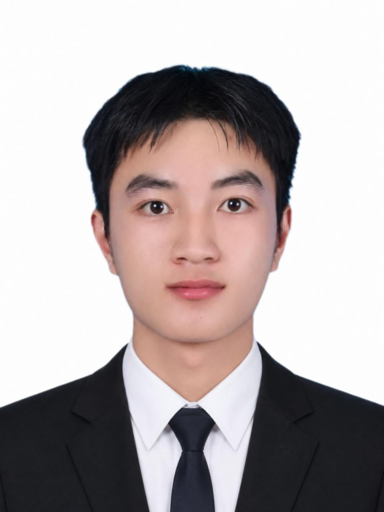
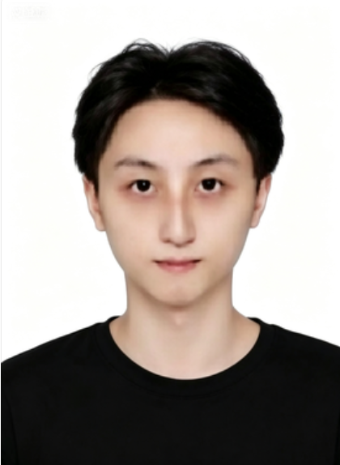
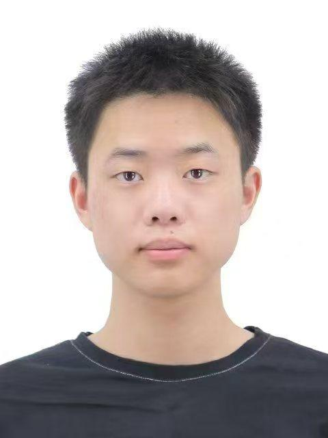
Undergraduate Students本科生
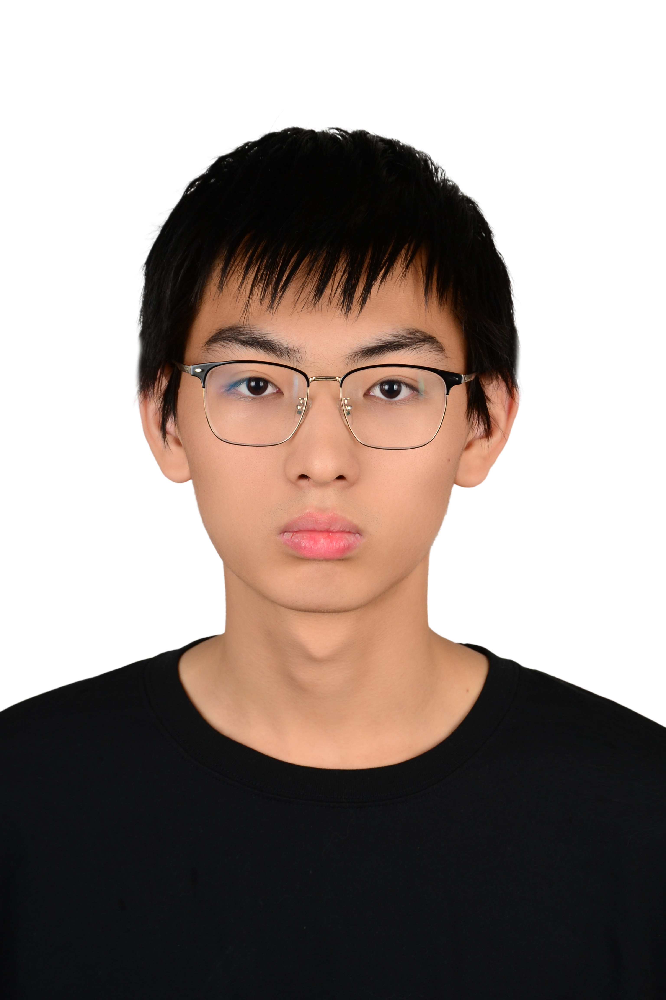
Project Interns项目实习生
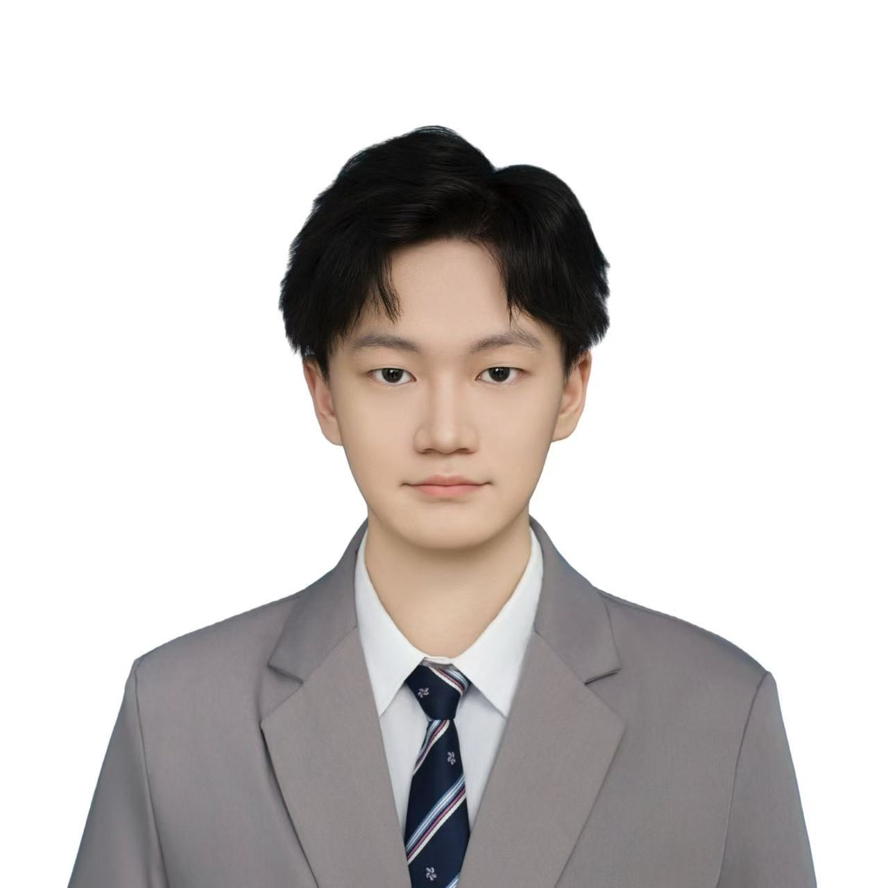
Alumni校友
📚 Selected Publications部分论文
* Corresponding author. Full and up-to-date list available upon request.* 通讯作者。完整最新列表可来函索取。
Y. Lou et al. "Dynamicwam: Dual-path motion conditioning for world-action models in dynamic manipulation." arXiv preprint arXiv:2608.00793 (2026).
Proposes DynamicWAM, a dual-path motion conditioning framework integrating historical optical flow, kinematic features, and asynchronous execution, achieving a 38.2% success rate and a 53.2 manipulation score on DOMINO, while improving real-world manipulation success by 22.9 percentage points over the strongest baseline to 46.7%.提出 DynamicWAM 双路径运动条件融合技术，通过结合历史光流、运动学特征与异步执行机制，在 DOMINO 基准上实现 38.2% 的任务成功率和 53.2 的操作评分，真实环境下平均成功率达到 46.7%，较最强基线提升 22.9 个百分点。
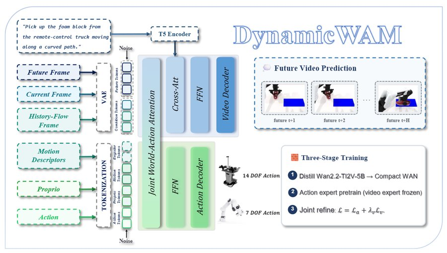
M. Li et al. "PS-DLO: Property-and Spatially Aware Deformable Linear Object Manipulation Policy." arXiv preprint arXiv:2610.34147 (2026).
Proposes PS-DLO, a property- and spatially aware manipulation policy integrating contrastive image-text learning for physical property priors and SAM3-based future spatial feature distillation, achieving an average success rate of 68.9% across nine real-world deformable linear object manipulation tasks, outperforming the strongest baseline by 20.0 percentage points.提出 PS-DLO 物理属性与空间感知融合策略，通过结合对比式图文学习提取物体属性先验，并利用 SAM3 进行未来空间特征蒸馏，在 9 项真实机器人柔性线状物体操作任务中实现 68.9% 的平均成功率，较最强基线提升 20.0 个百分点。
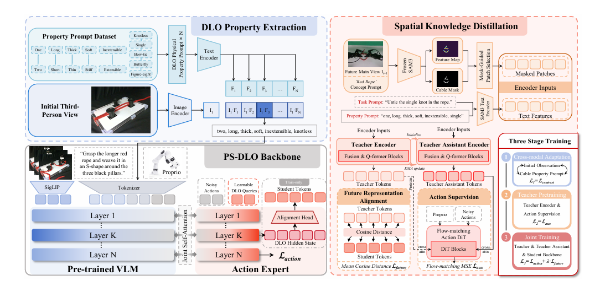
X. Han et al. "ForceBench: Benchmarking Force Integration for Robotic Manipulation." arXiv preprint arXiv:2610.19604 (2026).
Introduces ForceBench, a unified benchmark for evaluating six-axis wrist-force feedback integration, demonstrating that Prompt Fusion improves the average robotic manipulation success rate from 23.25% to 35.31% in simulation and from 40.00% to 63.00% in real-world tasks.提出 ForceBench 力觉融合评测基准，通过对比六种六轴腕部力反馈融合技术，发现 Prompt Fusion 方法将机器人操作任务的平均成功率从 23.25% 提升至 35.31%（仿真），真实环境下从 40.00% 提升至 63.00%。
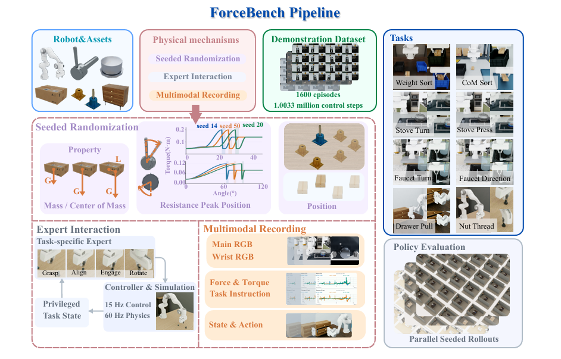
Y. Fu et al., "CableSort: Force-Guided Dual-Arm Sorting of Stacked Cables," RSS 2026 DAROMA Workshop (2026).
Proposes CableSort, a force-guided dual-arm cable sorting framework integrating structure-aware instance segmentation, eagle-claw grippers, and adaptive bilateral wrist-force feedback, achieving 0.93 instance segmentation IoU and a 48.0% end-to-end task success rate, outperforming the fixed-distance control baseline by 22.0 percentage points in simulation.提出 CableSort 力觉引导双臂线缆分拣框架，通过融合结构感知实例分割、鹰爪式夹爪与双腕力突变自适应控制技术，实现 0.93 的实例分割 IoU 和 48.0% 的端到端任务成功率，较固定距离控制基线提升 22.0 个百分点（仿真环境）。
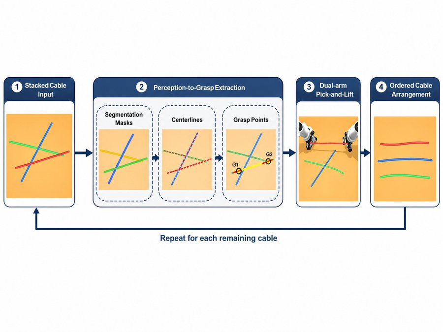
Y. Luo et al., "MMET: A Multi-Input and Multi-Scale Transformer for Efficient PDEs Solving," Proceedings of the 34th International Joint Conference on Artificial Intelligence (IJCAI), 2025.
Proposes MMET, a multi-input and multi-scale efficient Transformer framework integrating gated condition embedding, encoder-decoder decoupling, and Hilbert curve-based reserialization for efficient PDE solving, reducing the relative L2 error in displacement prediction by approximately 86.2%, from 0.337 to 0.0464, on the Beam2d benchmark.提出 MMET 多输入多尺度高效 Transformer 框架，通过融合门控条件嵌入、编码器-解码器解耦及 Hilbert 曲线重序列化技术，实现高效偏微分方程求解，在 Beam2d 基准上将位移预测的相对 L2 误差从 0.337 降至 0.0464，降低约 86.2%。
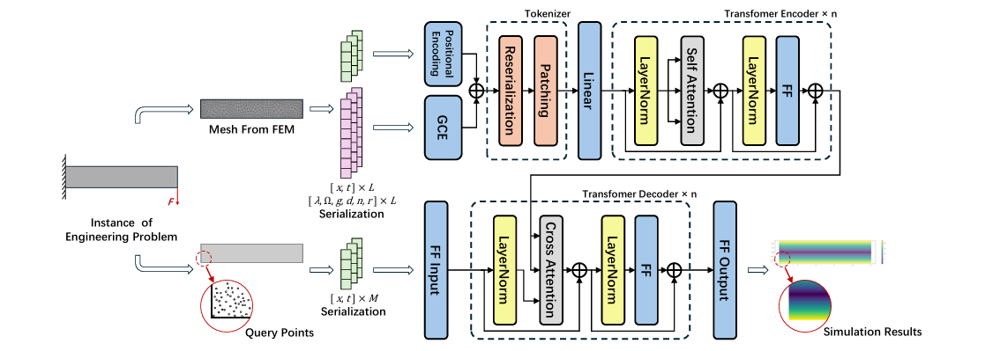
Y. Luo et al., "Mitigating Gradient Pathology in PINNs through Aligned Constraint", Proceedings of the 43rd International Conference on Machine Learning (ICML), 2026.
Proposes CAML (Constraint-Aligned Loss with Manifold Lifting), integrating zeroth-order constraint reformulation and delayed residual optimization to mitigate gradient conflicts in PINNs, increasing the fraction of training steps with aligned gradients from 5.89% to 39.16% on the Heat benchmark with an MLP backbone, while significantly improving convergence stability and efficiency for PDE solving.提出 CAML（约束对齐与流形提升）技术，通过零阶项约束重构与残差损失延迟机制缓解物理信息神经网络（PINNs）的梯度冲突，在 Heat 基准的 MLP 架构上将梯度方向一致的训练步数占比从 5.89% 提升至 39.16%，显著改善 PDE 求解的收敛稳定性与效率。
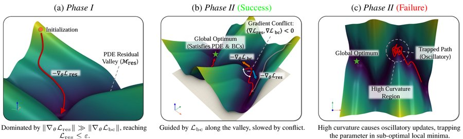
D. Hu et al., "Spectral-Temporal Conditioning: A Frequency-Domain Framework for Robust Robotic Imitation Learning" IEEE Transactions on Consumer Electronics (SCI-Q1).
Proposes Temp-ACT, a frequency-domain imitation learning framework integrating historical trajectory conditioning via STFT, asymmetric sinusoidal windowing, and learnable low-pass filtering to mitigate trajectory oscillations and cyclic stagnation in precision robotic manipulation, improving full-task success rates from 3% to 36% in simulation and from 5% to 30% in real-world experiments, representing gains of 33 and 25 percentage points, respectively.提出 Temp-ACT 频域增强模仿学习框架，通过融合历史轨迹短时傅里叶变换（STFT）、非对称正弦窗及可学习低通滤波技术，缓解机器人精密操作中的轨迹振荡与循环停滞问题，将端到端任务成功率从 3% 提升至 36%（仿真），从 5% 提升至 30%（真实环境），分别提高 33 和 25 个百分点。
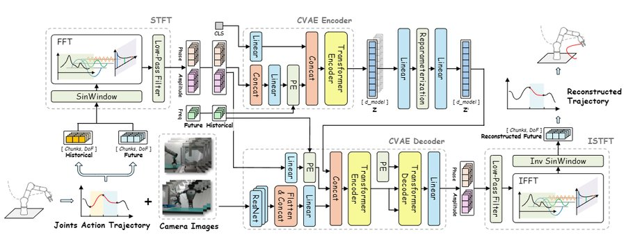
F. Ma et al., "Action prompt integration in large language models for time series forecasting of nuclear power industry systems," Advanced Engineering Informatics (SCI-Q1).
Proposes APiLLM, an action-prompt-enhanced LLM framework integrating adaptive trend-seasonality-residual decomposition, dynamic prompt-pool retrieval, and action-aware attention bias for industrial time-series forecasting, reducing prediction MSE by approximately 45.8%, from 0.2317 to 0.1256, compared with GPT4TS in the nuclear power circulating water system pipeline-leakage scenario.提出 APiLLM 动作提示增强大语言模型时序预测框架，通过融合趋势-季节性-残差自适应分解、动态提示池检索与动作感知注意力偏置技术，提升工业系统在操作干预和异常工况下的预测精度，在核电循环水系统管道泄漏场景中将预测均方误差（MSE）从 0.2317 降至 0.1256，较 GPT4TS 基线降低约 45.8%。
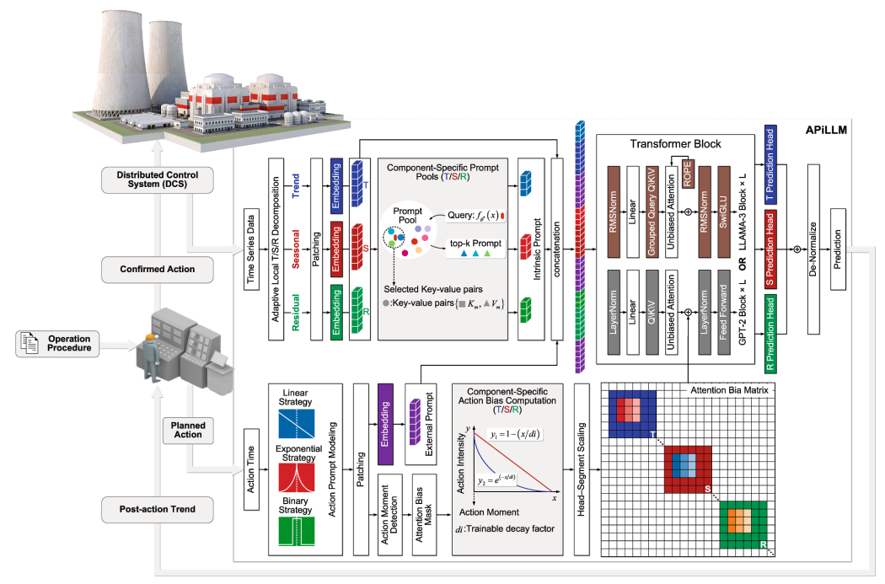
F. Ma et al., "Embodied Artificial Intelligence-Driven Integrated Development Environment for Industrial Automation Systems: Requirements and Framework," IEEE Industrial Electronics Magazine (SCI-Q2).
Proposes a modular IDE framework for embodied AI in industrial automation, integrating enhanced functional modules, lifecycle-oriented workflow management, and hardware-agnostic deployment to improve system deployability, maintainability, interoperability, and trustworthiness.提出面向工业自动化具身智能的模块化集成开发环境（IDE）概念框架，通过融合功能模块增强、全生命周期工作流管理及硬件无关部署技术，提升具身智能系统的可部署性、可维护性、互操作性与安全可信性。
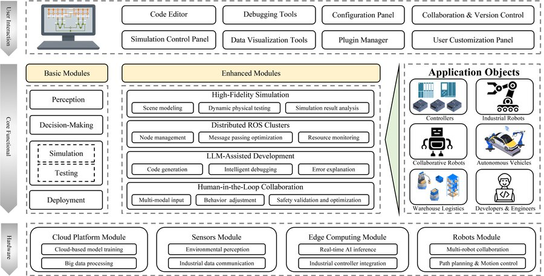
🎓 Teaching教学
-
Fundamentals of Robotics Embodied Intelligence System Development Practice机器人具身智能系统开发实践基础 (Class in session)（开课中）
A practice-oriented course covering the complete process of robot embodied intelligence development, divided into four units: task simulation, data collection, model training, and inference deployment.Learn more...一门面向实践的课程，覆盖机器人具身智能开发的完整流程，分为四个单元：任务仿真、数据采集、模型训练与推理部署。查看详情...... -
Physical Intelligence Development Training Camp物理智能开发训练营 (Student Engineering & Science Innovation Association)（学生工程与科创协会）
A hands-on training camp that connects classroom learning with industry deployment, strengthening students' practical abilities in physical intelligent engineering.一门连接课堂学习与产业部署的动手训练营，强化学生的物理智能工程实践能力。